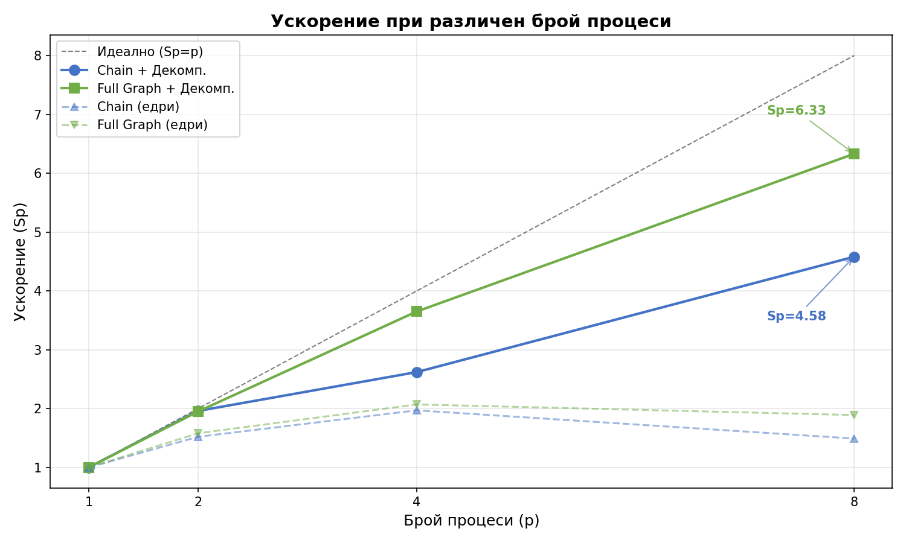
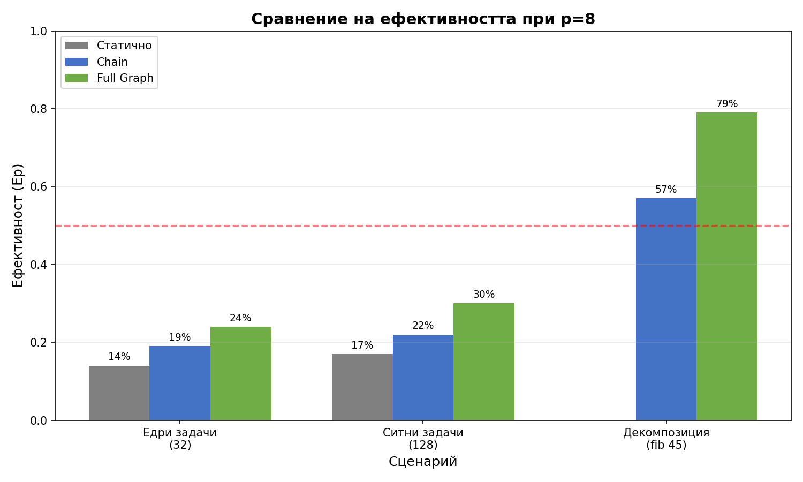
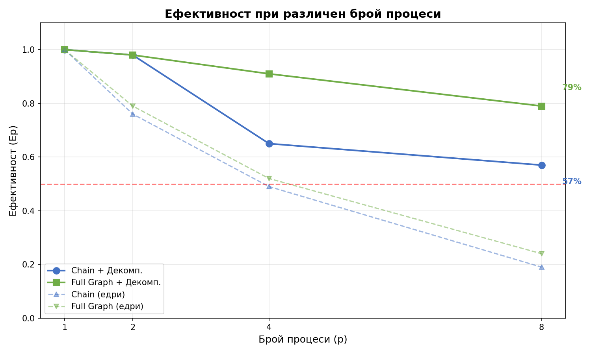

При нехомогенно натоварване статичното разпределение е неефективно - процес 0 е претоварен.
P2P Full Graph показва най-добри резултати:
Декомпозицията драматично подобрява ускорението:
| Топология | Без декомп. (Sp) | С декомп. (Sp) | Подобрение |
|---|---|---|---|
| Chain | 1.49 | 4.58 | +207% |
| Full Graph | 1.89 | 6.33 | +235% |
Ключови наблюдения:

Фигура 1: Ускорение при различен брой процеси - декомпозицията драматично подобрява резултатите
Ефективността (Ep = Sp/p) показва колко добре се използват процесите:

Фигура 2: Ефективност при p=8 - декомпозицията постига 79% при Full Graph

Фигура 3: Ефективност при различен брой процеси
Ключови изводи от графиките:
Прагът определя кога задачата се изчислява директно вместо да се декомпозира:
| Топология | Оптимален праг | Тествани прагове | Ограничение |
|---|---|---|---|
| Full Graph | 30 | 20-45 | Няма - всички стабилни |
| Chain | 30 | 20-45 | Праг <30 блокира при p=1 |
Защо Chain блокира при нисък праг? При p=1 и праг<30 се генерират твърде много подзадачи, което препълва локалната опашка. Full Graph няма този проблем поради директната комуникация между всички процеси.
Верижна топология (Chain):
Пълен граф (Full Graph):
Ключов извод: При декомпозиция Full Graph е с 38% по-бърз от Chain. Разликата идва от способността на всеки процес да краде работа директно от най-натоварения.
| Сценарий | Статично Sp | Chain Sp | Full Sp | Най-добър |
|---|---|---|---|---|
| Едри задачи (32) | 1.15 | 1.49 | 1.89 | Full (+64%) |
| Ситни задачи (128) | 1.38 | 1.79 | 2.42 | Full (+75%) |
| Декомпозиция fib(45) | - | 4.58 | 6.33 | Full (+38%) |